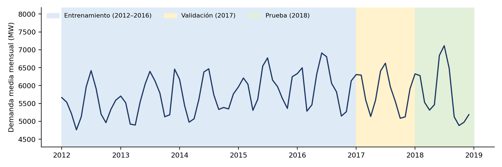
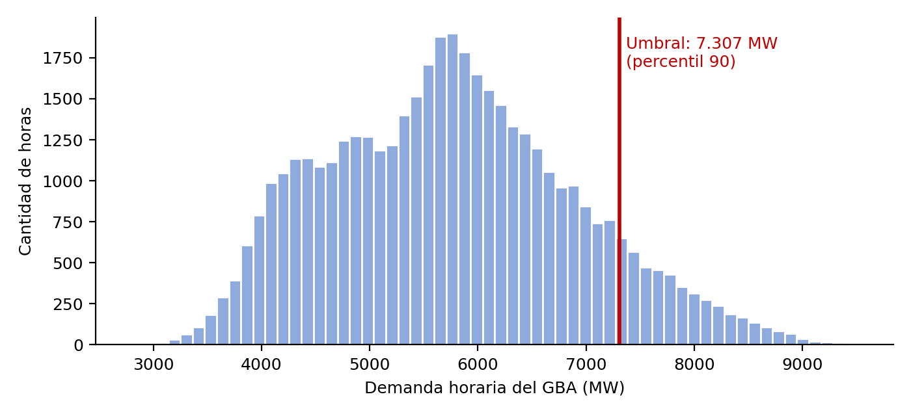
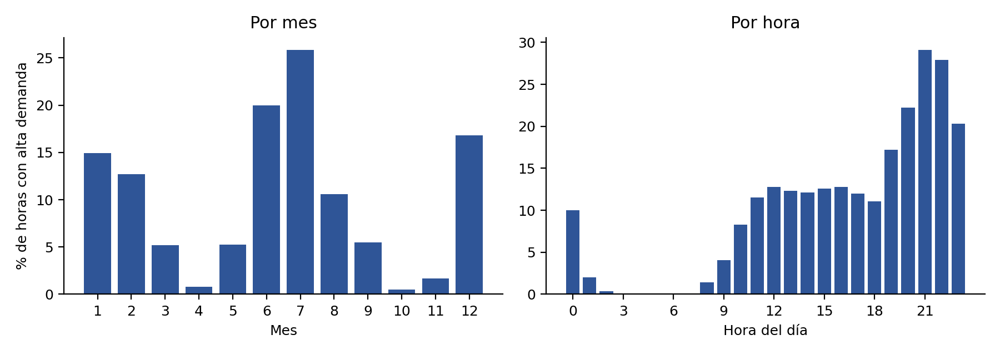
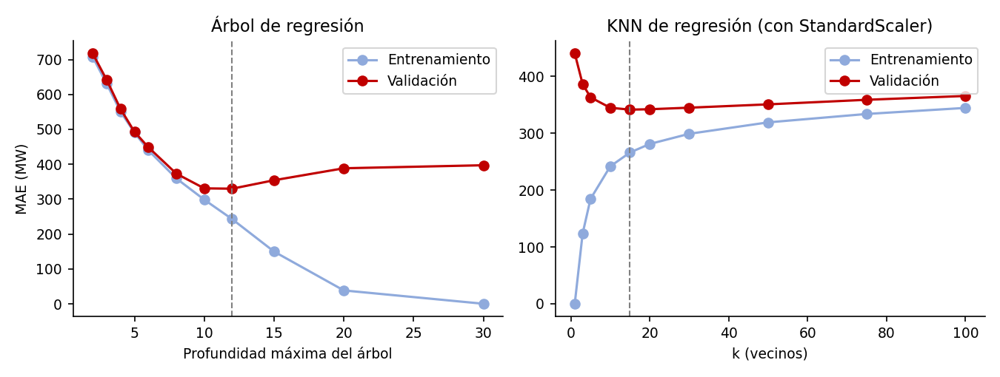
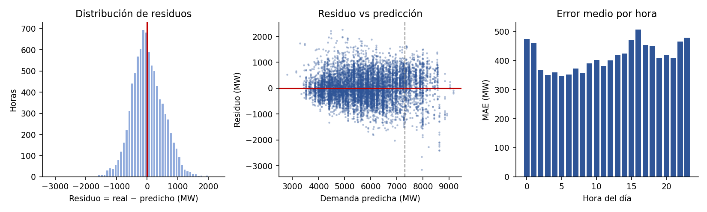
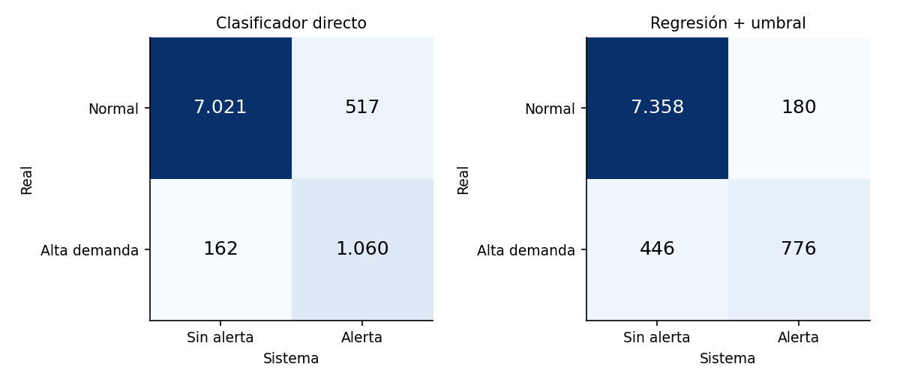
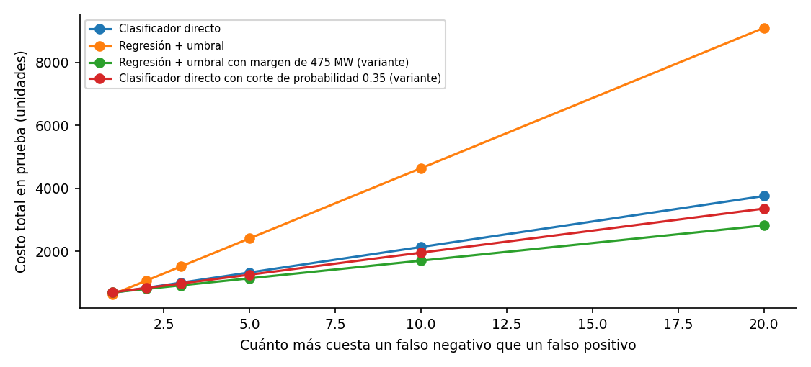
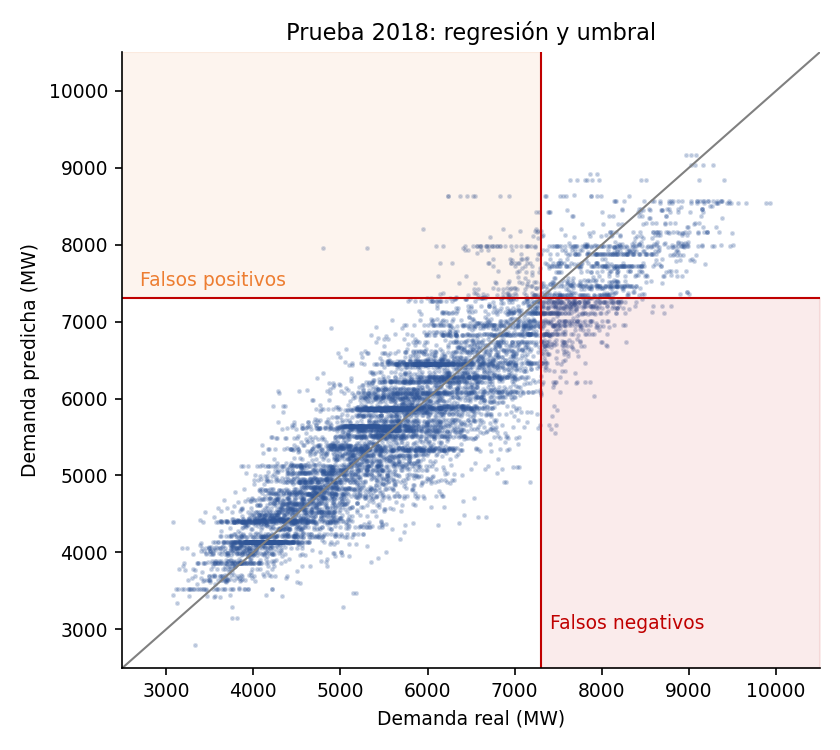

01 · Síntesis
¿Qué problema se aborda?
Un analista de despacho o una distribuidora necesita anticipar horas de demanda eléctrica elevada para preparar generación y reserva. El proyecto estima la demanda y genera una alerta de alta demanda de dos formas: mediante un clasificador directo y aplicando un umbral a la salida de la regresión.
Equipo de tres integrantes, con autorización del docente luego de la baja de un integrante.
02 · Datos y diseño
Datos, objetivo y protocolo
Fuente y unidad de análisis
Cada fila representa una hora de demanda del Gran Buenos Aires. El conjunto fue obtenido del portal Datos Argentina · Secretaría de Energía y atribuido a CAMMESA.
Para una cita reproducible, completar en el informe el enlace directo a la ficha del recurso y detallar si clima y EMAE provienen de esa descarga o de fuentes complementarias.
Objetivos
Regresión: demanda horaria `DemGBA`, en MW.
Clasificación: alta demanda cuando `DemGBA > 7.307 MW`. El umbral se calculó con el percentil 90 del entrenamiento, sin usar validación o prueba.
Predictores disponibles al momento de predecir
Temperatura, humedad, presión, radiación solar, velocidad del viento, feriado y variables de calendario (hora, día de semana, mes y fin de semana). Se excluyen la demanda, la clase derivada, identificadores temporales, EMAE por su disponibilidad tardía y los componentes redundantes del viento.
El uso previsto es una hora futura con el calendario y el pronóstico meteorológico de esa hora. En el entrenamiento se utilizó clima observado, por lo que el desempeño con pronósticos puede ser diferente.
| Conjunto | Período | Horas | Horas de alta demanda |
|---|---|---|---|
| Entrenamiento | 2012–2016 | 43.848 | 10,0 % |
| Validación | 2017 | 8.760 | 10,9 % |
| Prueba | 2018 | 8.760 | 13,9 % |



03 · Estimación numérica
Regresión: ¿cuánta demanda se espera?
Se compararon un DummyRegressor, una referencia estacional, un árbol de regresión y KNN con StandardScaler dentro de un Pipeline. La selección se hizo con validación; la prueba de 2018 se reservó para la evaluación final.
| Modelo | MAE valid. | MAE prueba | RMSE prueba | R² prueba |
|---|---|---|---|---|
| DummyRegressor (media) | 931 MW | 1.019 MW | 1.270 MW | −0,001 |
| Referencia estacional | 492 MW | 611 MW | 757 MW | 0,644 |
| DecisionTreeRegressor · profundidad 12 | 330 MW | 413 MW | 530 MW | 0,825 |
| KNeighborsRegressor · k = 15, escalado | 341 MW | 413 MW | 514 MW | 0,836 |
Interpretación del MAE: en la prueba, la predicción se aparta de la demanda real unos 413 MW en promedio. El árbol reduce el MAE aproximadamente un 59 % frente al DummyRegressor y un 32 % frente a la referencia estacional.


04 · Alertas
Clasificación: ¿se superará el umbral?
Se compararon DummyClassifier, DecisionTreeClassifier, KNeighborsClassifier con escalado y GaussianNB. Por el desbalance de clases, la accuracy no basta: el Dummy de clase mayoritaria logra 86,1 % de accuracy en prueba, pero no detecta ningún pico.
| Modelo (prueba 2018) | Accuracy | Precision | Recall | F1 | FP | FN |
|---|---|---|---|---|---|---|
| Dummy · clase mayoritaria | 0,861 | 0,000 | 0,000 | 0,000 | 0 | 1.222 |
| Referencia estacional + umbral | 0,890 | 0,917 | 0,235 | 0,374 | 26 | 935 |
| Árbol · profundidad 8, pesos 1:5 | 0,922 | 0,672 | 0,867 | 0,757 | 517 | 162 |
| KNN · k = 15, escalado | 0,923 | 0,827 | 0,570 | 0,675 | 146 | 525 |
| GaussianNB | 0,870 | 0,527 | 0,642 | 0,579 | 705 | 437 |
FP = falsa alerta; FN = pico real no detectado. Se seleccionó el árbol con pesos de clase por costo en validación, no por accuracy.

05 · Decisión integrada
Comparación de los dos sistemas
Ambos sistemas se evaluaron en las mismas 8.760 horas de 2018. El costo es una unidad relativa definida por el grupo: costo(FP) = 1 y costo(FN) = 5; no representa dinero real.
| Sistema | Accuracy | Precision | Recall | F1 | FP | FN | Costo |
|---|---|---|---|---|---|---|---|
| Clasificador directo | 0,922 | 0,672 | 0,867 | 0,757 | 517 | 162 | 1.327 |
| Regresión + umbral fijo | 0,929 | 0,812 | 0,635 | 0,713 | 180 | 446 | 2.410 |
| Regresión + umbral − 475 MW (variante) | 0,921 | 0,656 | 0,908 | 0,762 | 582 | 112 | 1.142 |
| Clasificador directo · corte 0,35 (variante) | 0,920 | 0,660 | 0,885 | 0,756 | 557 | 140 | 1.257 |
Lectura: con el umbral fijo, la regresión deja sin detectar 446 de los 1.222 picos; el clasificador directo omite 162. Bajo el costo supuesto 1:5, el clasificador directo cuesta un 45 % menos que la regresión con umbral fijo. Una variante con margen de precaución reduce aún más el costo en esta prueba, pero debe validarse con más períodos.


06 · Demostración interactiva
Probá el modelo con tus datos
Ingresá una fecha, una hora y las condiciones meteorológicas pronosticadas. Se estima la demanda
con la regresión y se evalúa la alerta con ambos sistemas, usando los Pipelines guardados en
modelos/.
Prototipo educativo entrenado con datos 2012–2018. No es una herramienta operativa de CAMMESA.
07 · Alcance y reproducibilidad
Limitaciones y cuándo no usar la solución
Limitaciones
- Los datos terminan en 2018; cambiaron la demanda y el contexto energético.
- Se entrenó con clima medido, no con pronósticos meteorológicos.
- Los costos relativos 1:5 son un supuesto del grupo, no costos operativos observados.
- La imputación por interpolación previa a la partición puede usar información posterior a horas faltantes.
- Los resultados de prueba corresponden a un solo año y las variantes de umbral necesitan más validación.
No usar como única base para decidir
- Una región diferente del GBA o condiciones fuera del rango de entrenamiento.
- Pronósticos meteorológicos de baja calidad o eventos excepcionales que el modelo no representa.
- Decisiones de seguridad del suministro sin revisión de personal responsable.
Es un prototipo educativo para comparar modelos, no una herramienta operativa de CAMMESA.
Archivos del proyecto
- Fuente, preparación y diccionario de datos.
- Notebook de entrenamiento y evaluación.
- Metadatos de los modelos guardados.
- Bitácora de decisiones y distribución de tareas.
- Informe final en Word y presentación.
Reproducibilidad Python 3.12 · NumPy 2.4.4 · pandas 3.0.2 · scikit-learn 1.8.0 · joblib 1.5.3 · semilla 42.
La aplicación Flask se encuentra en el repositorio.